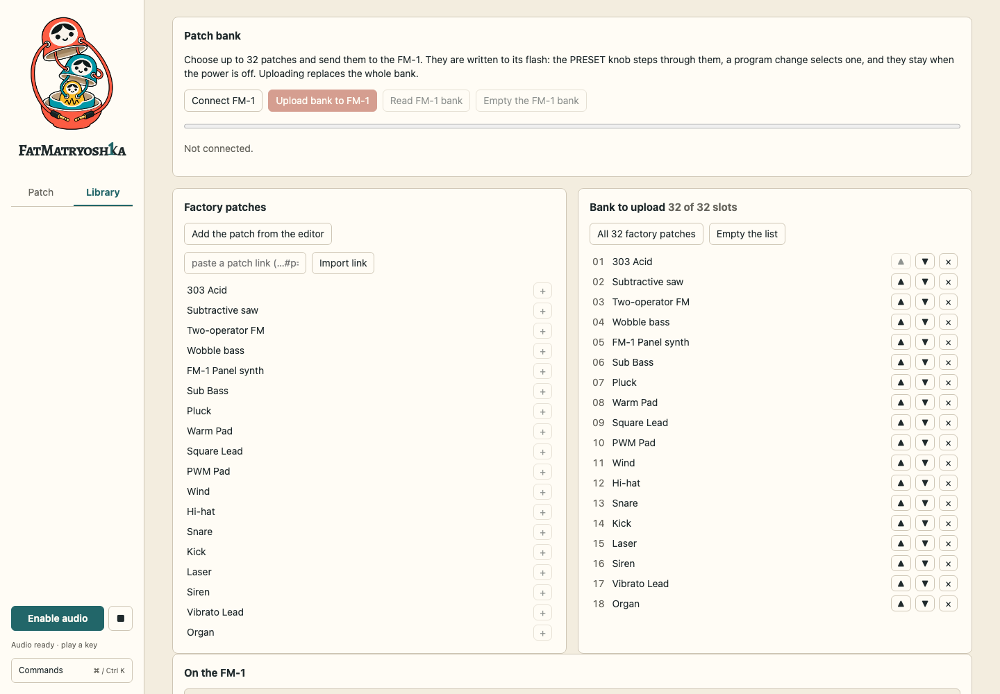
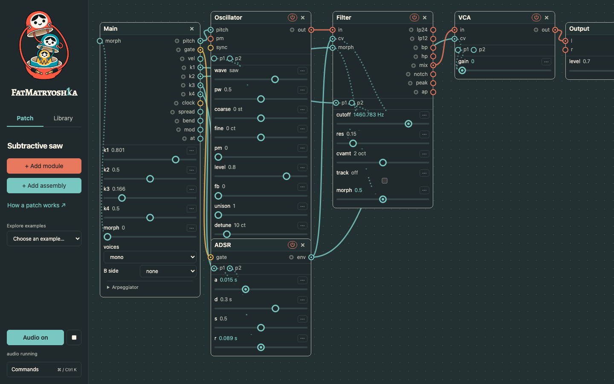

UI audit · October 2026 · proposals only
Make the structure teach the sound.
The editor’s strongest feature is the visible relationship between a sound, its controls and the assemblies that contain them. The next improvements should make those relationships easier to discover and inspect.
The proposals below have not been implemented. This audit followed the requested changes: cable layering, click-to-front, resizable assemblies, equally prominent Add module / Add assembly, a reversible introductory tour, default audio, held-key arpeggiation and the Matryoshka wordmark.
Reviewed in Chromium at desktop, tablet and phone widths, with light and dark themes. Flows included fresh start, the tour, a dense example, routing menus, patching, assemblies, Library, command search and keyboard focus. Findings combine observed UI behavior with design judgment; no user study was conducted.
What I would do next
- Rebuild Library around assemblies and your own work. The current first screen is still a hardware patch-bank manager.
- Explain modulation where it happens. Show the base value, live result and named incoming source together.
- Add signal tracing and a “why is this silent?” path. Make the app’s transparency useful from the first patch.
01 · Highest priority · Medium effort
Give Library the same priorities as the editor
Observed: Library opens with a large Patch bank panel, Factory patches and “Bank to upload: 32 of 32 slots.” Assemblies are below that first screen. A browser-only beginner is led toward preset management and disconnected hardware controls.
Proposal: lead with My assemblies, Building blocks and My patches; put FM-1 bank management in the hardware settings flow or a clearly secondary Library section. Give each assembly a small structural preview and counts of exposed inputs, outputs and controls.
Success: a newcomer finds a reusable voice or envelope without scrolling past a factory bank or connecting hardware.

The current Library still gives presets and device upload the first screen.
02 · Highest priority · Medium effort
Show base and live values together
Observed: an automated slider and its numeric readout move with the signal; the base value is in a tooltip. A stationary value can therefore appear to have been edited when it is only being modulated.
Proposal: retain the moving jack, add a small stationary base marker, and label the two values in the control’s inspector: “Base 1.2 kHz · Now 2.4 kHz · LFO → Mod 1.” During a drag, emphasize the base marker. Offer exact numeric entry there as well.
Success: users can tell what they set, what modulation adds, and what dragging will change.
03 · Highest priority · Medium effort
Trace a signal without guessing
Observed: colors distinguish audio, control and gate, but busy patches require visually following long overlapping curves. The tiny ◎ scope buttons are easy to overlook.
Proposal: hovering or focusing a jack highlights its entire route, with source and destination labels. A pinned inspector can show a small waveform and named routing list. Add “Trace to output” and “Why is this silent?” commands that identify a closed gate, missing audio connection, bypass or zero level.
Success: a beginner can explain why a held key does or does not produce sound without loading another preset.
04 · High priority · Small effort
Keep assembly titles readable
Observed: the assembly header still combines power, expand, save, ungroup and delete alongside its name. Long names wrap; small containers feel crowded even now that they can grow.
Proposal: keep the name, Expand / Collapse and power visible. Put Save, Rename, Dissolve and Delete in one actions menu and the command palette. Explain the distinction between dissolving a container and deleting its contents in that menu.
Success: a normal-size assembly keeps a one-line title and the most frequent action remains one click away.
05 · High priority · Small to medium effort
Make the Main module approachable
Observed: the four-module starter is simple, but Main still shows many unused outputs, four hardware knobs, morphing and voice controls. It is taller than the sound source.
Proposal: introduce a compact Main view that keeps connected ports plus Pitch, Gate and Velocity visible. Reveal performance and hardware controls through an explicit “More outputs” section; keep every connected control visible automatically.
Success: the starter’s first screen reads as key → sound → gate → output, without hiding the full engine from experienced users.
06 · High priority · Medium effort
Let the user build the next tour patch
Observed: the new tour demonstrates a wired voice and wraps it into an assembly. It does not yet ask the user to make the initial connections themselves.
Proposal: a second optional lesson begins with four disconnected modules. Ask for pitch, audio and gate connections one at a time, acknowledge each real connection, then invite one LFO and a reusable assembly. Add Back and a compact step list. Keep the current quick tour for orientation.
Success: users can create the same simple voice after closing the lesson, rather than merely remembering a preset name.
Less cryptic labels, without wider cards
Use readable display labels while retaining existing serialized IDs and hardware mappings. Prefer “Knob 1” and “Mod 1” over inventing another abbreviation. They fit the ordinary port rows; only the densest chip-style controls need shorter forms.
| Current | Display proposal | Compact fallback / explanation |
|---|
k1…k4 | Knob 1…4 | Kn1…4 on tiny chips. Tooltip: “FM-1 knob K1 · controls cutoff + resonance.” Keep K1 in hardware assignment menus for an exact device match. |
p1 / p2 | Mod 1 / Mod 2 | M1 / M2 only if necessary. Tooltip names the source and all destinations. A small “×2” badge indicates fan-out. |
cv | Cutoff, Level, or the destination’s name | Use a module-specific semantic label, with “control input · CV” in the tooltip. For a repurposed or multi-destination input, say “Control” and expose its route list. |
cvamt | CV depth | Depth in the destination context. Include the actual unit, such as octaves. |
pw | Pulse width | Width when the oscillator’s waveform context is clear. |
pm / fb | Phase mod / Feedback | PM / FB only on jack chips, with full accessible names and descriptions. |
vel / at | Velocity / Pressure | Vel / Press on chips. Explain that Pressure follows aftertouch. |
a / d / s / r | Attack / Decay / Sustain / Release | Full names already fit parameter rows. Use A/D/S/R only on a miniature envelope diagram. |
lp24 / lp12 / bp / hp | Low-pass 24 / Low-pass 12 / Band-pass / High-pass | LP24 / LP12 / BP / HP at the jack; reveal the full filter response when focused. |
l (mono) / r | Left / mono · Right | L / R on a stereo pair, with a visible “mono” cue on the left input. |
For an exposed assembly input, prioritize its user-defined label. “Brightness” is better than “Mod 1” when that is its purpose. A hover/focus description should still reveal “Mod 1 → Filter cutoff + Oscillator level.”
Further opportunities
07 · Medium priority · Medium effort
Distinguish available routes from active signals
Internal dotted links currently appear even when the side jack has no source. Fade or hide inactive route scaffolding until the module, jack or destination is focused; keep active modulation and the selected route visible. A “Show all internal routes” command should retain full transparency.
08 · Medium priority · Small effort
Use a useful idle state for audio
“Audio on” confirms the engine is running but does not tell the user whether the patch is producing signal. Add a compact output meter and a true mute toggle; retain Panic for stuck notes. Distinguish “ready”, “key held”, “signal present” and “muted”.
09 · Medium priority · Medium effort
Give cable actions larger targets
Thin cable strokes and small scope buttons require precision. Add generous invisible hit areas, clear keyboard focus, and a route list for selecting or disconnecting overlapping cables. On touch, provide an explicit Patch mode because Alt-drag is unavailable.
10 · Medium priority · Small effort
Make the command palette explain what it will add
The module and assembly tags now make direct search work. Add a one-line purpose to each result—“Oscillator · creates a periodic audio signal” or “Voice · 4 modules, pitch + gate in”—plus a small structural preview for assemblies. Keep matching fast and name-first.
11 · Medium priority · Medium effort
Navigate assembly depth explicitly
Add an unobtrusive breadcrumb when editing inside a nested assembly, with commands to select the parent or reveal a routed endpoint. Show which controls are exposed at the current boundary, so editing nested structure feels deliberate rather than spatially accidental.
12 · Medium priority · Small effort
Move transient messages beside their cause
The sidebar audio-status line also receives patch, import and routing messages. Use short local feedback near the changed cable or newly inserted assembly; reserve audio status for the engine. Keep a recent-messages command for retrieving longer explanations.
13 · Medium priority · Medium effort
Offer layout assistance without persistent zoom controls
Dense examples still contain touching cards and long cross-canvas routes. Add palette actions for Align selection, Distribute and Tidy this assembly. Preserve intentional layouts and make each operation one undo step. The default workspace should remain free of zoom chrome.

Click-to-front fixes access, but intentional layout tools would reduce the need for overlap in the first place.
14 · Medium priority · Medium effort
Continue the mobile tour around the active module
The tour now preserves readable control size and pans to its subject. A next iteration could dock its copy into a collapsible bottom sheet and expose previous/next module navigation. The lesson should help people follow the signal horizontally without relying on pinch zoom or remembering where a hidden card went.
View the current phone tourThe current tour is a useful baseline; a collapsible sheet would return more vertical space during hands-on steps.
15 · Lower priority · Small effort
Finish a small-size branding system
Choose one of the ten cable directions, then produce a deliberate small icon, full illustration and monochrome version. The custom K already carries the 1; its smallest rendition should be checked for reading as a single letter rather than “1k”. Keep logo detail subordinate to the patch, especially in the mobile drawer.